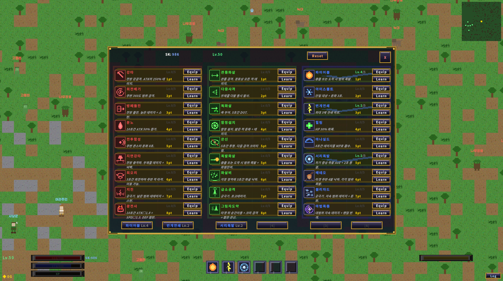

// dialogue
Dialogue
Local Ollama responses combined with NPC cognition context. When the LLM is unavailable, a pre-defined dialogue graph picks up the conversation cleanly.
local-llm NPC perception / dialogue / world generation
Ported a Phaser 3 TS-based RPG to Unity 2D C# while designing and implementing a local Ollama LLM-backed NPC perception & dialogue system. An R&D case study validating offline-first and graceful fallback. Not a demo — an operational experiment: the game must keep running even when the LLM cuts out.

An NPC cognition structure with memory, mood, and skills as separate axes. The same question yields different responses depending on the NPC's state — and the flow stays intact as LLM availability changes.
Local Ollama responses combined with NPC cognition context. When the LLM is unavailable, a pre-defined dialogue graph picks up the conversation cleanly.

Per-NPC mood state. Directly shapes response tone, priority, and how likely the NPC is to refuse a request.

The set of actions an NPC can perform. The layer that turns dialogue outcomes into game-state changes.
Even without an LLM response, the NPC has to behave without awkward pauses. Assuming response timeouts, server failures, and offline mode, the game falls back to a pre-defined dialogue graph plus mood-aware static responses, gracefully.
Outcome of the experiment: rich dialogue while the LLM is up; a mode close to a traditional RPG dialogue system when it's down. Verified that the same NPC in the same scenario doesn't break its flow in either mode.